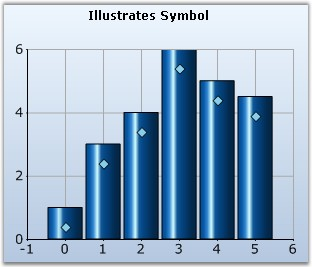

Sets the attributes of the symbol that is to be displayed at this point.
|
Details | |
|
Possible Values |
· Size - Specifies the size of the symbol. · Color - Specifies the color of the symbol. · Shape - Specifies the shape of the symbol. · Offset - Specifies the offset of the symbol. |
|
Default Value |
· Size - 10,10 · Color - HighLightText Color · Shape - None · Offset - 0,0 |
|
2D / 3D Limitations |
No |
|
Applies to Chart Element |
Any Series |
|
Applies to Chart Types |
Column Chart, Bar Chart, Bubble Chart, Financial Chart, Line Chart, BoxandWhisker Chart, Gantt chart, Tornado chart, Radar Chart, Polar Chart, Area Charts, Scatter Chart |
Here is sample code snippet using Symbol in Column Chart.
Series Wide Setting
|
[C#]
this.chartControl1.Series[0].Style.Symbol.Shape = ChartSymbolShape.Diamond; this.chartControl1.Series[0].Style.Symbol.Color=Color.Green; this.chartControl1.Series[0].Style.Symbol.Size = new Size(10, 10); this.chartControl1.Series[0].Style.Symbol.Offset = new Size(1, 20);
//Sets the Color of the Symbol border. this.chartControl1.Series[0].Style.Symbol.Border.Color = Color.Blue; //Sets the Width of the Symbol border. this.chartControl1.Series[0].Style.Symbol.Border.Width = 1; //Sets the Alignment of the Symbol border. this.chartControl1.Series[0].Style.Symbol.Border.Alignment = PenAlignment.Outset; //Sets the Dash style of the Symbol Border. this.chartControl1.Series[0].Style.Symbol.Border.DashStyle = DashStyle.Solid; |
|
[VB.NET]
Private Me.chartControl1.Series(0).Style.Symbol.Shape = ChartSymbolShape.Diamond Private Me.chartControl1.Series(0).Style.Symbol.Color=Color.Green Private Me.chartControl1.Series(0).Style.Symbol.Size = New Size(10, 10) Private Me.chartControl1.Series(0).Style.Symbol.Offset = New Size(1, 20)
'Used to set the Color of the Symbol border. Private Me.chartControl1.Series(0).Style.Symbol.Border.Color = Color.Blue 'Used to set the Width of the Symbol border. Private Me.chartControl1.Series(0).Style.Symbol.Border.Width = 1 'Used to set the Alignment of the Symbol border. Private Me.chartControl1.Series(0).Style.Symbol.Border.Alignment = PenAlignment.Outset 'Used to set the Dash style of the Symbol Border. Private Me.chartControl1.Series0).Style.Symbol.Border.DashStyle = DashStyle.Solid |

Figure 214: Blue Color Diamond symbol in a Column Chart with vertical offset of 20
Specific Data Point Setting
To specify customized symbols for individual datapoints, use Series.Styles[i].Symbol property, where i ranges from 0 to n representing the data points.
|
[C#]
this.chartControl1.Series[0].Styles[0].Symbol.Shape = ChartSymbolShape.Diamond; this.chartControl1.Series[0].Styles[0].Symbol.Color=Color.Green; this.chartControl1.Series[0].Styles[0].Symbol.Size = new Size(10, 10); this.chartControl1.Series[0].Styles[0].Symbol.Offset = new Size(1, 20);
this.chartControl1.Series[0].Styles[1].Symbol.Shape = ChartSymbolShape.Hexagon; this.chartControl1.Series[0].Styles[1].Symbol.Color=Color.Yellow; this.chartControl1.Series[0].Styles[1].Symbol.Size = new Size(9, 9); this.chartControl1.Series[0].Styles[1].Symbol.Offset = new Size(1, 20);
//Used to set the Color of the Symbol border. this.chartControl1.Series[0].Styles[0].Symbol.Border.Color = Color.Blue; //Used to set the Width of the Symbol border. this.chartControl1.Series[0].Styles[0].Symbol.Border.Width = 3; //Used to set the Alignment of the Symbol border. this.chartControl1.Series[0].Styles[0].Symbol.Border.Alignment = PenAlignment.Outset; //Used to set the Dash style of the Symbol Border. this.chartControl1.Series[0].Styles[0].Symbol.Border.DashStyle = DashStyle.Solid; |
|
[VB.NET]
Private Me.chartControl1.Series(0).Styles(0).Symbol.Shape = ChartSymbolShape.Diamond Private Me.chartControl1.Series(0).Styles(0).Symbol.Color=Color.Green Private Me.chartControl1.Series(0).Styles(0).Symbol.Size = New Size(10, 10) Private Me.chartControl1.Series(0).Styles(0).Symbol.Offset = New Size(1, 20)
Private Me.chartControl1.Series(0).Styles(1).Symbol.Shape = ChartSymbolShape.Hexagon Private Me.chartControl1.Series(0).Styles(1).Symbol.Color=Color.Yellow Private Me.chartControl1.Series(0).Styles(1).Symbol.Size = New Size(9, 9) Private Me.chartControl1.Series(0).Styles(1).Symbol.Offset = New Size(1, 20)
'Used to set the Color of the Symbol border. Private Me.chartControl1.Series(0).Styles[0].Symbol.Border.Color = Color.Blue 'Used to set the Width of the Symbol border. Private Me.chartControl1.Series(0).Styles[0].Symbol.Border.Width = 3 'Used to set the Alignment of the Symbol border. Private Me.chartControl1.Series(0).Styles[0].Symbol.Border.Alignment = PenAlignment.Outset 'Used to set the Dash style of the Symbol Border. Private Me.chartControl1.Series0).Styles[0].Symbol.Border.DashStyle = DashStyle.Solid |
See Also
Column Charts, Bar Charts, Bubble Chart, Financial Chart, Line Charts, BoxandWhisker Chart, Gantt chart, Tornado chart, Radar Chart, Polar Chart, Area Charts, Scatter Chart